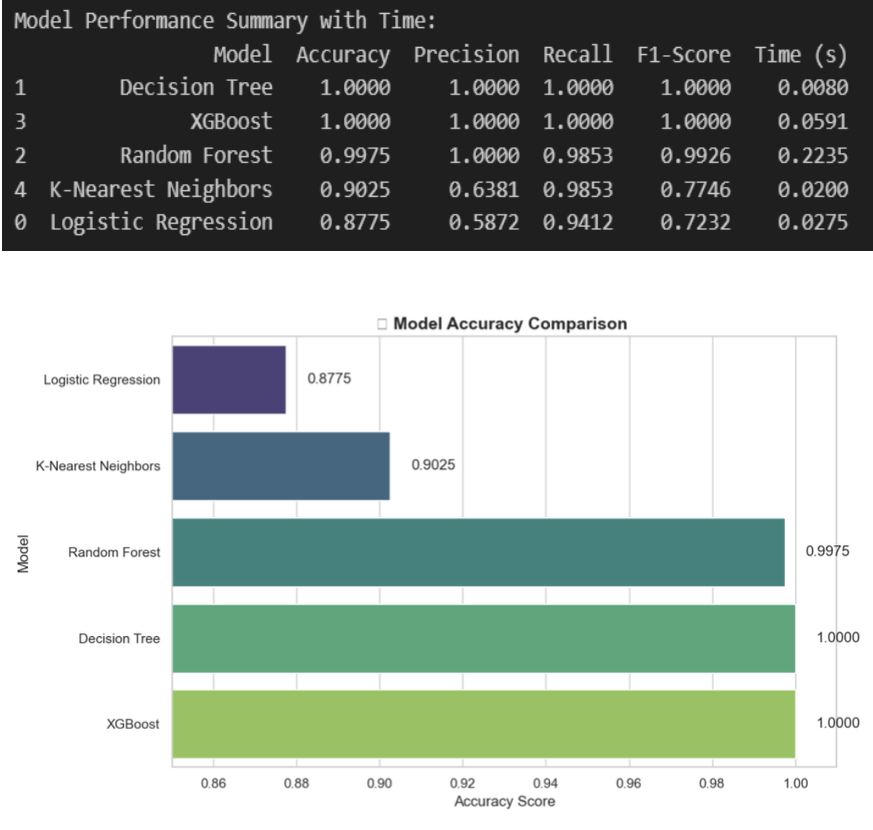
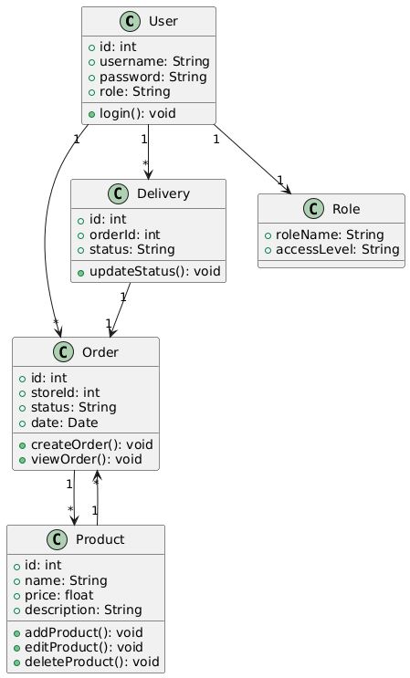
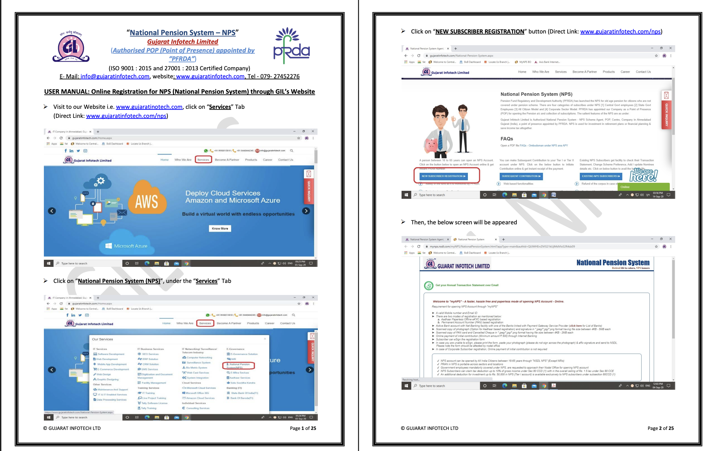
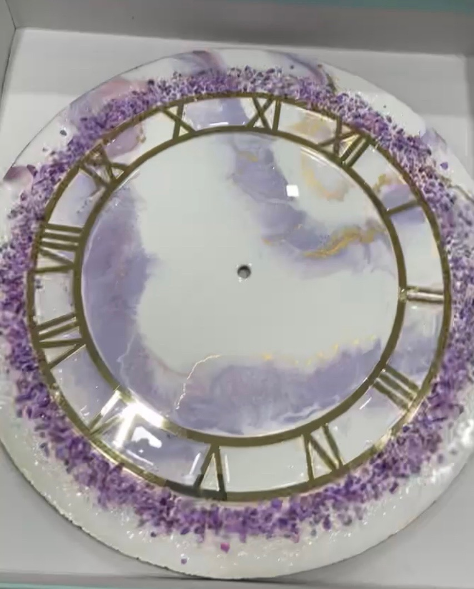
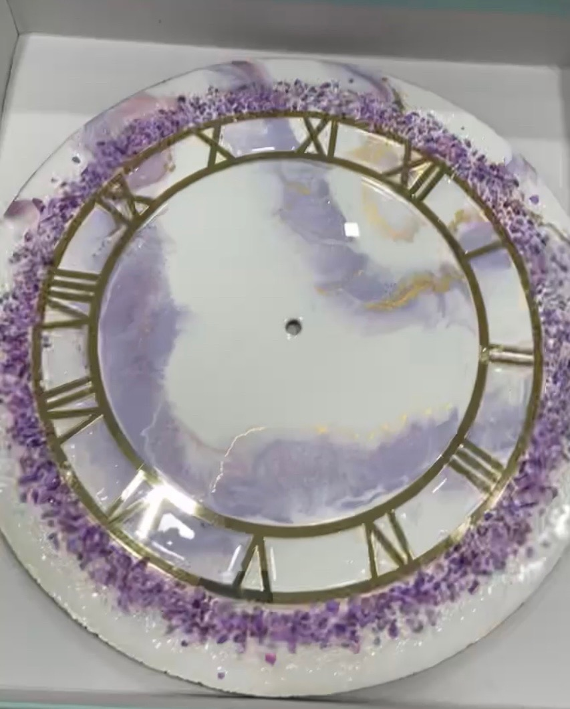

Education
M.S. in Information Systems
Northeastern University - Toronto • GPA: 4.0 • Expected 2025
Data Science Engineering Methods, Advanced Machine Learning Applications, Database Architecture
Postgraduate Diploma in Mobile Application Development
Centennial College • GPA: 4.2
Full-stack development, mobile UX design, software engineering principles
Bachelor of Computer Applications
Gujarat University • First Class with Distinction • GPA: 4.0
Computer science fundamentals, programming, database systems
Professional Experience
Technical Writer & UX Researcher
Prismetric Technologies • 3+ Years
Published 300+ technical articles on AI, cybersecurity, digital transformation. Specialized in user experience analysis and technology trend research.
UX Designer - Government Digital Services
Gujarat Infotech • Internship
National Pension System accessibility design focusing on elderly user experience and regulatory compliance navigation.
Social Media Manager & Content Strategist
Cross-functional Leadership
Led content strategy initiatives and audience engagement across digital platforms.
Research Assistant
Northeastern University - Toronto
Advanced coursework excellence in machine learning applications and data science methodologies.
Featured Research
Healthcare AI: Machine Learning for Medical Prediction

Challenge: Ensemble machine learning models for healthcare prediction addressing data imbalance and clinical interpretability.
Solution: XGBoost, Random Forest, Neural Networks with SMOTE balancing and statistical validation.
Impact & Results:
- Achieved 100% prediction accuracy using ensemble methods
- Addressed severe class imbalance in medical datasets
- Developed interpretable models for clinical applications
FlowCart: Empowering Female Entrepreneurs

Challenge: Delivery platform for female-driven small businesses addressing operational challenges.
Solution: JavaFX and MySQL with role-based interfaces and real-time tracking.
Impact & Results:
- Streamlined operations for women entrepreneurs
- Role-based access control for different user types
- Intuitive interfaces reducing operational complexity
National Pension System: Accessible Design for Elderly Users

Challenge: Government system accessibility for elderly users navigating complex pension regulations.
Solution: Comprehensive user manuals and accessible interface design for senior citizens.
Impact & Results:
- Simplified pension registration for millions of users
- Improved elderly accessibility in government services
- Clear documentation for complex regulatory processes
BCMS: Human-Centered Airport Operations Database
Challenge: Airport operations with fragmented systems causing inefficiencies in baggage handling and catering services.
Solution: Integrated relational database with 15+ entities, real-time tracking, and user-centered design for diverse stakeholders.
Impact & Results:
- Designed comprehensive database architecture for complex operations
- Real-time tracking system improving passenger experience
- Scalable design for high-traffic airport environments
- Human-centered approach to technical system design

 
